一、
一、点的运动学
点的运动学研究质点位置、速度、加速度随时间变化的规律，是整个运动学的基础。四种方法本质上都是对同一运动的不同表达：矢量法最一般，直角坐标法最便于计算，自然法最贴合轨迹，切向/法向加速度揭示曲线运动本质。
展开查看本页知识总图（放大版）
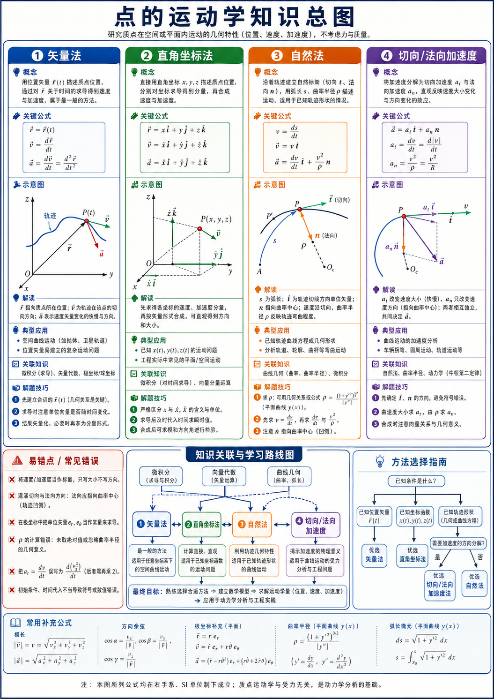
章节总图：先建立本页知识的主干结构，再进入每个子模块学习。
本模块重点：先根据总图建立章节主线，再逐个学习子模块的详细讲解、应用场景、知识关联、扩展理解、解题技巧、易错提醒和小练习。
本模块重点：以位置矢量 r(t) 为核心，用对时间求导统一得到速度和加速度。
① 详细讲解：把概念讲透
矢量法用位置矢量 r(t) 描述动点 P 在空间中的位置，r 的端点随时间扫出的曲线就是点的轨迹。
加速度 a 是速度矢量对时间的一阶导数，既可以反映速度大小改变，也可以反映速度方向改变。曲线运动中，a 往往不与 v 同向。
学习抓手：先把点的位置写成矢量，再通过连续求导得到速度、加速度；重点训练“矢量既有大小又有方向”的意识。
② 应用场景：看到题目知道怎么用
- 空间轨迹分析：如机械臂末端、无人机路径、卫星轨道上的点运动。
- 参数方程运动：题目直接给出 r(t)，可以机械地求 v(t)、a(t)。
- 方向判断题：利用速度沿轨迹切线、加速度表示速度变化的性质判断物理意义。
- 为刚体运动打基础：刚体上任一点最终也要回到点的速度、加速度分析。
③ 知识关联：和前后内容连起来
- 直角坐标法就是把 r、v、a 分别投影到 x、y、z 轴上。
- 自然法是把加速度重新分解到轨迹切向和法向上。
- 点的合成运动仍然使用矢量叠加，如 vₐ=vₑ+vᵣ。
- 刚体平面运动的基点法本质上也是矢量法的应用。
④ 扩展理解：从公式走到物理意义
学习矢量法时不要只记公式，更要理解“求导会同时改变大小和方向”。
矢量法能把位移、速度、加速度统一成一套语言，是后续动力学受力分析的基础。
⑤ 解题技巧：考试时按这个流程来
- 先画参考点 O 和动点 P，明确 r 的方向。
- 先求矢量表达，再求大小；不要先把方向丢掉。
- 速度方向沿轨迹切线，加速度方向看速度矢量如何变化。
- 结果要写单位，速度 m/s，加速度 m/s²。
⑥ 易错提醒：这些坑最容易扣分
- 把路程当位移：路程只有大小，位移有方向。
- 把速度方向画成指向圆心：那通常是法向加速度方向，不是速度方向。
- 只算大小不判断方向，导致物理意义不完整。
⑦ 小练习：学完马上巩固
题目：已知 r(t)=2t i+(t²+1)j，求 t=2s 时速度和加速度。
参考答案：v=2i+2t j，t=2 时 v=2i+4j；a=2j。
模块配图
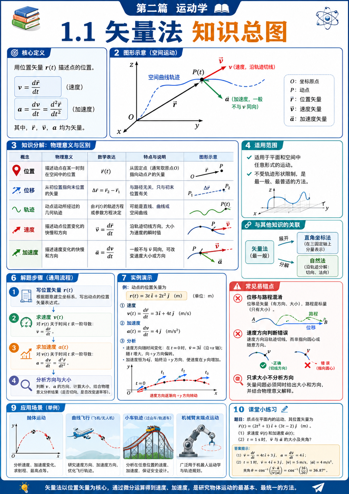
看图提示：先观察图中的公式主线、运动示意、方法关联和易错提醒，再回到左侧内容区完成理解。
本模块重点：把点的运动分解到固定坐标轴方向，适合计算和列式。
① 详细讲解：把概念讲透
直角坐标法在固定坐标系 Oxyz 中，用 x(t)、y(t)、z(t) 三个坐标函数描述点的位置。
加速度分量由坐标函数二阶导数得到：aₓ=d²x/dt²，aᵧ=d²y/dt²，a_z=d²z/dt²。
学习抓手：把复杂运动拆成坐标分量，用普通函数求导处理，是最常用、最稳的计算方法。
② 应用场景：看到题目知道怎么用
- 平面抛体运动：水平与竖直方向分开处理。
- 空间路径计算：机械臂、车辆路径、粒子轨迹。
- 轨迹消参：由 x(t)、y(t) 消去 t 得到 y=f(x)。
- 求速度方向角：用 vₓ、vᵧ 计算方向。
③ 知识关联：和前后内容连起来
- 矢量法提供总体表达，坐标法提供分量计算。
- 与解析几何关系密切，常需要消参求轨迹。
- 与自然法可互相验证：坐标法算出的总加速度可再分解为切向/法向。
- 刚体平面运动中也常用坐标分量列方程。
④ 扩展理解：从公式走到物理意义
坐标法不是只适合直线运动，只要坐标函数能写出，就可用于曲线运动。
有时可以先用坐标法算结果，再用图像或物理意义检查方向。
⑤ 解题技巧：考试时按这个流程来
- 先确定坐标轴正方向，避免正负号混乱。
- 分别求各分量，最后再合成大小。
- 速度大小用 |v|=√(vₓ²+vᵧ²+v_z²)。
- 不要把坐标 x 与位移、路程混为一谈。
⑥ 易错提醒：这些坑最容易扣分
- 漏写某一方向分量，尤其空间问题中的 z 分量。
- 把速度一阶导和加速度二阶导写反。
- 合成大小时直接相加，而不是平方和开方。
⑦ 小练习：学完马上巩固
题目：已知 x=t²，y=3t，求 t=2s 时速度大小。
参考答案：t=2 时 vₓ=4，vᵧ=3，所以 |v|=5 m/s。
模块配图
看图提示：先观察图中的公式主线、运动示意、方法关联和易错提醒，再回到左侧内容区完成理解。
本模块重点：沿轨迹建立切向、法向，用弧长 s 和曲率半径 ρ 描述曲线运动。
① 详细讲解：把概念讲透
自然法以轨迹为基础，用弧长 s 描述点沿曲线走了多远。
加速度分成切向 aₜ 和法向 aₙ：切向分量改变速率，法向分量改变速度方向。
学习抓手：沿轨迹本身建立坐标，用切向和法向理解曲线运动，尤其适合已知轨迹形状或曲率半径的问题。
② 应用场景：看到题目知道怎么用
- 汽车过弯、列车转弯、过山车轨道等曲线运动。
- 圆周运动是自然法最典型特例，此时 ρ=R。
- 已知速度随弧长或时间变化时，自然法比坐标法更直观。
- 分析轨迹曲率对安全速度、离心趋势的影响。
③ 知识关联：和前后内容连起来
- 切向/法向加速度模块是自然法的核心展开。
- 圆周运动公式 aₙ=v²/R 来自自然法。
- 刚体定轴转动中点的圆周运动可直接套自然法思想。
- 坐标法可算总加速度，自然法解释其方向和组成。
④ 扩展理解：从公式走到物理意义
曲率半径越小，轨迹弯得越急，同样速度下法向加速度越大。
速度大小不变并不代表加速度为零，因为方向变化也会产生加速度。
⑤ 解题技巧：考试时按这个流程来
- 先判断轨迹是直线、圆还是一般曲线。
- 切向方向沿速度方向，法向方向指向曲率中心。
- 先求 v，再求 aₜ 和 aₙ。
- 圆周运动中直接令 ρ=R。
⑥ 易错提醒：这些坑最容易扣分
- 把法向方向画成任意垂直方向，实际应指向曲率中心。
- 把曲率半径 ρ 和圆半径 R 混淆。
- 忽略 aₙ，误以为匀速曲线运动无加速度。
⑦ 小练习：学完马上巩固
题目：某点沿半径 R=5m 的圆周匀速运动，速度 v=10m/s，求法向加速度。
参考答案：aₙ=100/5=20m/s²，方向指向圆心。
模块配图
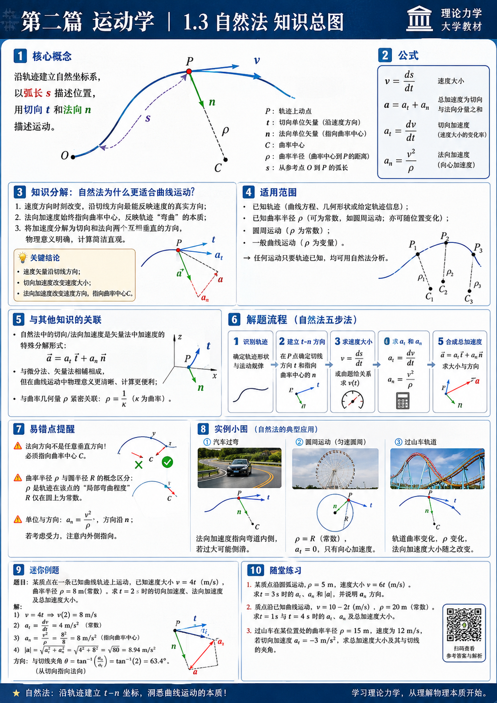
看图提示：先观察图中的公式主线、运动示意、方法关联和易错提醒，再回到左侧内容区完成理解。
本模块重点：切向加速度改变速度大小，法向加速度改变速度方向。
① 详细讲解：把概念讲透
切向加速度 aₜ 与速度方向共线或反向，决定速率增加、减小或保持不变。
总加速度 a 是 aₜ 与 aₙ 的矢量和，两者在自然坐标系中互相垂直。
学习抓手：把总加速度拆成“改变速度大小”的切向分量和“改变速度方向”的法向分量，是理解曲线运动的钥匙。
② 应用场景：看到题目知道怎么用
- 汽车转弯时的向心加速度分析。
- 匀速圆周运动与变速圆周运动区分。
- 机械臂末端沿曲线轨迹运动的加速度分析。
- 轨道交通、过山车、飞机转弯安全分析。
③ 知识关联：和前后内容连起来
- 自然法提供 t-n 坐标基础。
- 定轴转动中 aₜ=rα、aₙ=rω² 与本模块完全对应。
- 刚体平面运动加速度合成中也有切向与法向项。
- 动力学中，法向加速度常对应向心力需求。
④ 扩展理解：从公式走到物理意义
判断加速度方向时，不要只看速度大小，还要看轨迹是否弯曲。
总加速度方向一般既不沿速度，也不指向圆心，而是由两分量合成。
⑤ 解题技巧：考试时按这个流程来
- 先判断速度大小是否变化，决定 aₜ。
- 再判断轨迹是否弯曲，决定 aₙ。
- 画出互相垂直的分量，再合成总加速度。
- 注意 aₙ 永远指向曲率中心。
⑥ 易错提醒：这些坑最容易扣分
- 认为加速度一定与速度同向。
- 认为匀速运动一定没有加速度。
- 把 aₜ 与 aₙ 的物理作用混淆。
⑦ 小练习：学完马上巩固
题目：某点作曲线运动，aₜ=6m/s²，aₙ=8m/s²，求总加速度大小。
参考答案：a=√(6²+8²)=10m/s²。
模块配图
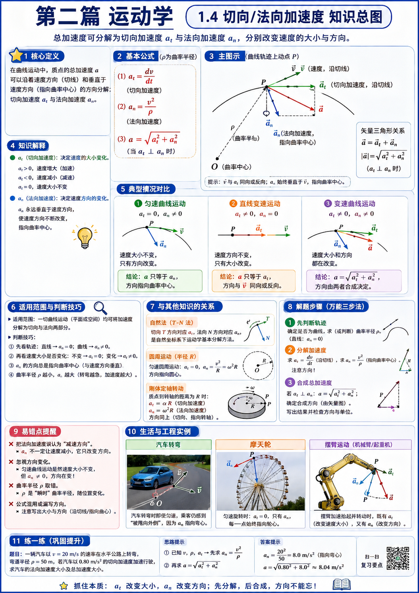
看图提示：先观察图中的公式主线、运动示意、方法关联和易错提醒，再回到左侧内容区完成理解。
二、
二、刚体的基本运动
刚体的基本运动把点运动学推广到刚体整体。平动强调姿态不变，各点速度、加速度相同；定轴转动强调绕固定轴旋转，各点角量相同而线量随半径改变；角速度/角加速度描述转动变化。
展开查看本页知识总图（放大版）
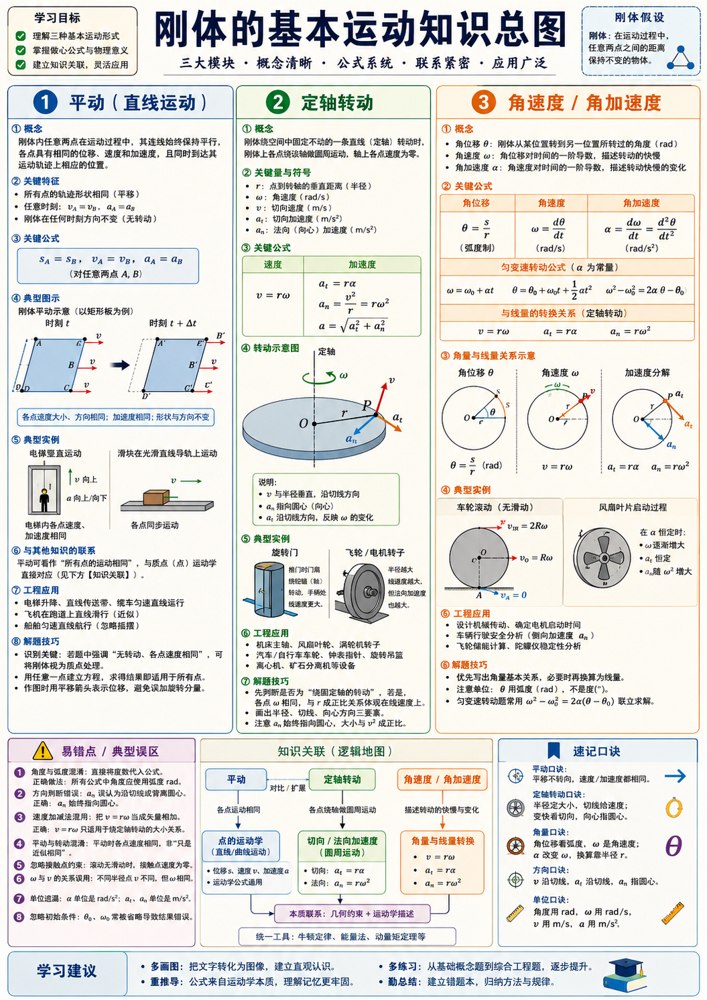
章节总图：先建立本页知识的主干结构，再进入每个子模块学习。
本模块重点：先根据总图建立章节主线，再逐个学习子模块的详细讲解、应用场景、知识关联、扩展理解、解题技巧、易错提醒和小练习。
本模块重点：刚体内任意直线在运动中始终保持平行，刚体姿态不变。
① 详细讲解：把概念讲透
刚体平动时，刚体内任意一条直线在运动过程中始终与初始位置平行。
同一瞬时刚体上所有点的速度相同、加速度相同。
学习抓手：抓住“姿态不变”这个核心，平动刚体可以用任意一点代表整体运动。
② 应用场景：看到题目知道怎么用
- 电梯整体升降。
- 传送带上的箱体不翻转平移。
- 导轨滑块沿直线或曲线移动。
- 工程中把复杂刚体运动简化成一点运动。
③ 知识关联：和前后内容连起来
- 平动是刚体基本运动之一。
- 与质点运动联系最紧密，可用一点代表整体。
- 一般平面运动可以分解为基点平动加绕基点转动。
- 与定轴转动对比：平动无角速度，定轴转动有角速度。
④ 扩展理解：从公式走到物理意义
判断平动时不要只看某一点轨迹是否直线，而要看刚体的方向是否保持不变。
平动模型常用于简化工程计算。
⑤ 解题技巧：考试时按这个流程来
- 观察刚体前后姿态是否一致。
- 任选一点求速度、加速度即可代表整体。
- 如果各点速度方向和大小都相同，通常是平动。
- 题中说“无转动”时优先考虑平动模型。
⑥ 易错提醒：这些坑最容易扣分
- 把直线运动等同于平动。
- 忽略曲线平动也属于平动。
- 明明刚体姿态改变，却仍按平动处理。
⑦ 小练习：学完马上巩固
题目：刚体作平动，A 点加速度为 2m/s² 向上，B 点加速度是多少？
参考答案：B 点加速度为 2m/s² 向上。
模块配图
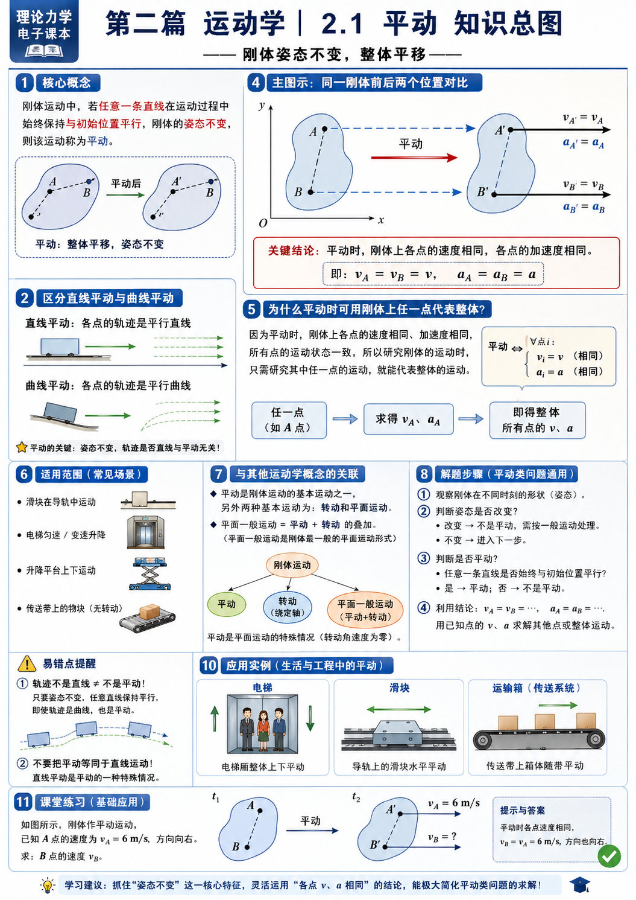
看图提示：先观察图中的公式主线、运动示意、方法关联和易错提醒，再回到左侧内容区完成理解。
本模块重点：刚体绕空间中一条固定轴转动，轴外各点绕轴作圆周运动。
① 详细讲解：把概念讲透
定轴转动是刚体绕一条固定不动的轴转动，轴上各点保持静止。
同一刚体在同一时刻具有相同的角速度 ω 和角加速度 α。
学习抓手：定轴转动先找固定轴，再找半径 r；同一刚体角量相同，线量随 r 改变。
② 应用场景：看到题目知道怎么用
- 门绕铰链转动。
- 飞轮、皮带轮、电机转子旋转。
- 齿轮、转盘、风扇叶片运动。
- 刚体动力学中转动惯量与转矩分析的前置基础。
③ 知识关联：和前后内容连起来
- 刚体上任一点都可看作圆周运动。
- 线量公式来自自然法中的切向/法向加速度。
- 角速度/角加速度是定轴转动的核心变量。
- 平面运动中的瞬心法常把瞬时运动等效成绕一点转动。
④ 扩展理解：从公式走到物理意义
半径越大，线速度和法向加速度越大，所以轮缘点比靠近轴的点运动更剧烈。
定轴转动把“整体角量”和“点的线量”连接起来。
⑤ 解题技巧：考试时按这个流程来
- 先确定转轴位置，轴不能随意选。
- 半径 r 是点到转轴的垂直距离。
- 比较线速度大小时只比较 r，因为同一刚体 ω 相同。
- 注意 aₙ 指向转轴或圆心。
⑥ 易错提醒：这些坑最容易扣分
- 认为同一刚体上所有点线速度相同。
- 把半径 r 取成任意两点距离。
- 把切向加速度和法向加速度方向画反。
⑦ 小练习：学完马上巩固
题目：某转盘 ω=8rad/s，P 点到转轴距离 r=0.25m，求 P 点线速度。
参考答案：v=0.25×8=2m/s。
模块配图
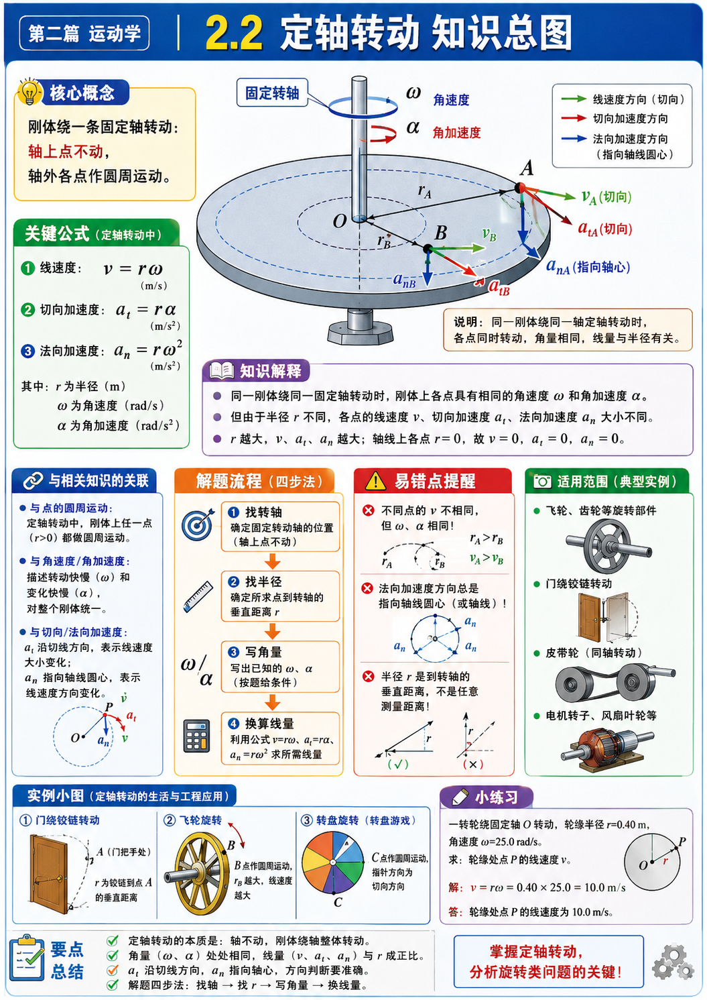
看图提示：先观察图中的公式主线、运动示意、方法关联和易错提醒，再回到左侧内容区完成理解。
本模块重点：角速度描述转得多快，角加速度描述角速度变化得多快。
① 详细讲解：把概念讲透
角位移 θ 表示刚体从参考位置转过的角度，单位通常为 rad。
角加速度 α=dω/dt，表示角速度变化快慢，也就是“转得快慢如何变化”。
学习抓手：把 θ、ω、α 看成转动版的 x、v、a，先理解导数关系，再联系线速度和线加速度。
② 应用场景：看到题目知道怎么用
- 电机从静止启动到稳定转速。
- 飞轮加速、减速过程。
- 车辆轮胎角速度与车速换算。
- 转动机构的启动时间、转角计算。
③ 知识关联：和前后内容连起来
- 与直线运动中的 x、v、a 完全类比。
- 与定轴转动的线量关系 v=rω、aₜ=rα、aₙ=rω² 相连。
- 刚体平面运动中角速度、角加速度仍是描述转动分量的核心。
- 动力学中转矩与角加速度直接相关。
④ 扩展理解：从公式走到物理意义
角速度的方向常用右手定则确定，平面问题中可用逆时针为正。
角量必须用弧度制才能与线量公式直接配合。
⑤ 解题技巧：考试时按这个流程来
- 先规定正方向，再写 θ(t)。
- θ 对时间求导得 ω，ω 再求导得 α。
- 不要把 rad/s 当作 m/s。
- 求线量时必须乘半径 r。
⑥ 易错提醒：这些坑最容易扣分
- 角度用“度”直接代入公式。
- 把 α 与切向加速度 aₜ 混为一谈。
- 忽略角速度正负号，只看大小。
⑦ 小练习：学完马上巩固
题目：已知 θ=3t²+2t，求 t=1s 时 ω 和 α。
参考答案：ω=6t+2，t=1 时 ω=8rad/s；α=6rad/s²。
模块配图
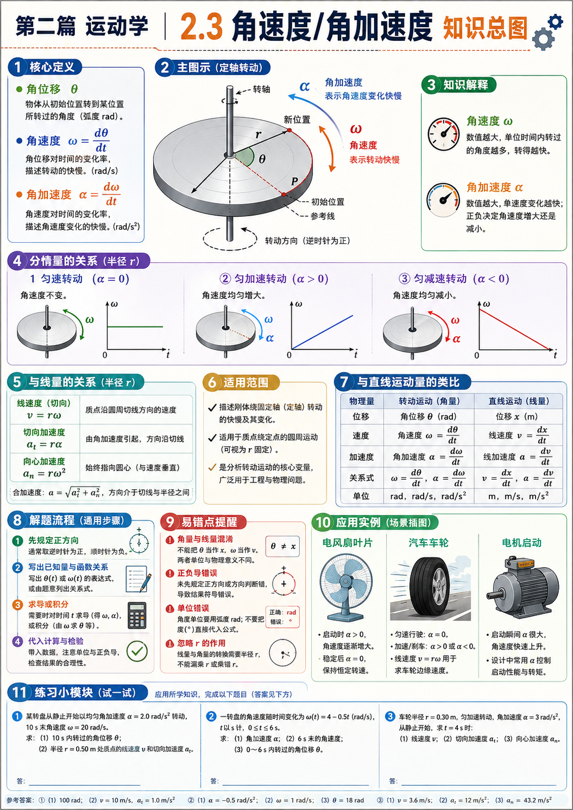
看图提示：先观察图中的公式主线、运动示意、方法关联和易错提醒，再回到左侧内容区完成理解。
三、
三、点的合成运动 ★
点的合成运动是运动学重点与难点。它研究同一动点相对于静系、动系的不同运动描述，核心是选对动点和动系，再建立绝对运动、相对运动、牵连运动之间的速度与加速度合成关系。
展开查看本页知识总图（放大版）
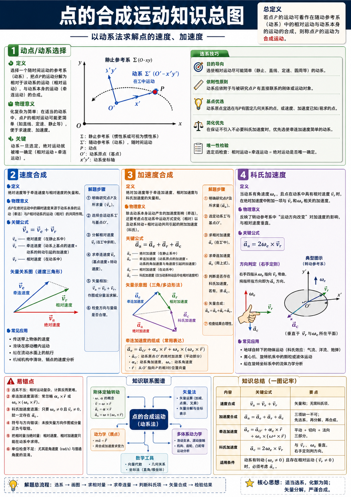
章节总图：先建立本页知识的主干结构，再进入每个子模块学习。
本模块重点：先根据总图建立章节主线，再逐个学习子模块的详细讲解、应用场景、知识关联、扩展理解、解题技巧、易错提醒和小练习。
本模块重点：合成运动解题的第一步不是列公式，而是选对动点和动系。
① 详细讲解：把概念讲透
动点是题目真正要研究的点，通常是滑块、套筒、接触点或某机构上的特定点。
静系通常取地面、机架或固定坐标系，用来描述绝对运动。
学习抓手：合成运动先别急着套公式，第一步必须选准动点、动系和静系。
② 应用场景：看到题目知道怎么用
- 滑块沿转杆滑动。
- 人在车厢内行走。
- 套筒沿转动杆运动。
- 船上人、传送带上物体、旋转平台上的点。
③ 知识关联：和前后内容连起来
- 速度合成和加速度合成都依赖动点/动系选择。
- 转动动系会引出科氏加速度。
- 与刚体平面运动中选择基点思想相似。
- 本质上仍是矢量法在不同参考系中的应用。
④ 扩展理解：从公式走到物理意义
同一道题可能有多种选系方法，但好的选系能让相对运动变成直线、匀速或已知方向。
选系能力是合成运动题目的核心门槛。
⑤ 解题技巧：考试时按这个流程来
- 先圈出题目要求的点作为动点。
- 选择与约束槽、杆、转盘固连的动系。
- 用一句话写清楚三种运动。
- 检查相对运动是否真的变简单。
⑥ 易错提醒：这些坑最容易扣分
- 把运动物体当成动点，忘了动点必须是一个点。
- 动系和静系混淆，导致 vₑ、vᵣ 含义颠倒。
- 没有说明参考系就直接写公式。
⑦ 小练习：学完马上巩固
题目：滑块 P 在绕 O 转动的杆上滑动，研究 P 的运动，动系怎么选更方便？
参考答案：动点选 P，动系选与杆固连并随杆转动的坐标系。
模块配图
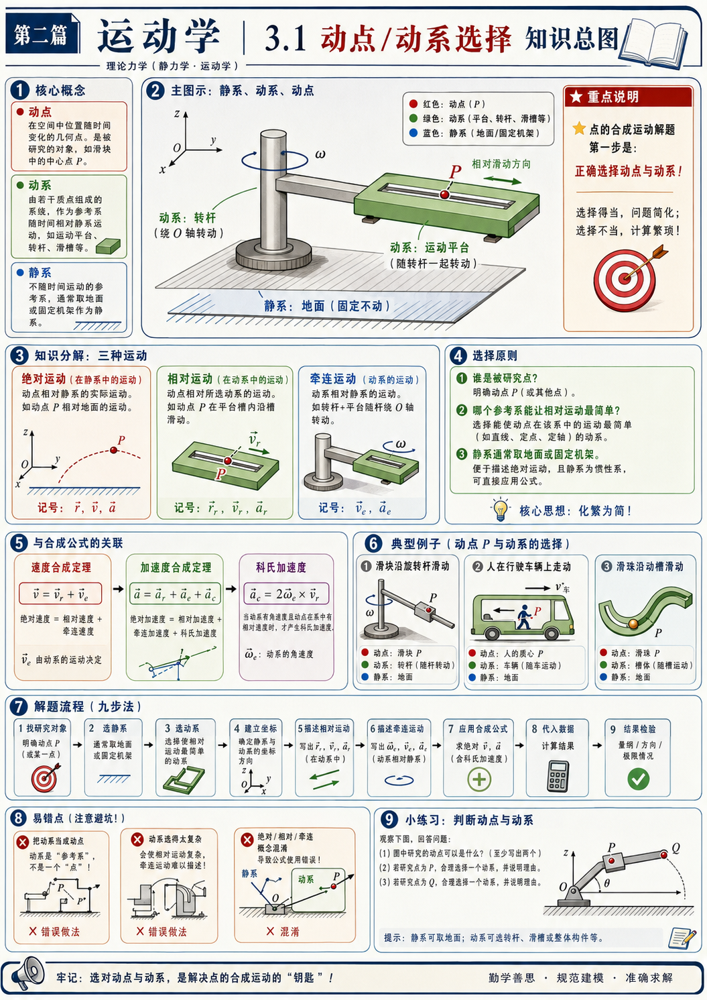
看图提示：先观察图中的公式主线、运动示意、方法关联和易错提醒，再回到左侧内容区完成理解。
3.2
速度合成 vₐ=vₑ+vᵣ
导学总览对应子目录模块图文讲解
本模块重点：绝对速度等于牵连速度与相对速度的矢量和。
① 详细讲解：把概念讲透
绝对速度 vₐ 是动点相对于静系的速度，也就是地面观察者看到的真实速度。
牵连速度 vₑ 是动系带着动点一起运动所产生的速度。
学习抓手：速度合成就是速度矢量三角形：绝对速度 = 牵连速度 + 相对速度。
② 应用场景：看到题目知道怎么用
- 人在运动传送带上行走。
- 滑块沿旋转杆移动。
- 船在流水中航行。
- 机构中滑块相对槽的速度分析。
③ 知识关联：和前后内容连起来
- 动点/动系选择决定 vₑ 和 vᵣ 的含义。
- 加速度合成是在速度合成基础上继续求导。
- 与刚体平面运动基点法一样都是矢量叠加。
- 与直角坐标法结合可列分量方程求未知量。
④ 扩展理解：从公式走到物理意义
速度合成不是“大小相加”，而是矢量相加。若两个速度垂直，可以用勾股；若有夹角，则要用余弦定理或分量法。
⑤ 解题技巧：考试时按这个流程来
- 先画已知方向的 vᵣ。
- 再画动系带动产生的 vₑ。
- 首尾相接得到 vₐ。
- 未知量多时列 x、y 分量方程。
⑥ 易错提醒：这些坑最容易扣分
- 直接把速度大小加起来。
- 把 vₑ 和 vᵣ 方向画反。
- 忽略速度是相对于哪个参考系而言。
⑦ 小练习：学完马上巩固
题目：vₑ=6m/s 向右，vᵣ=8m/s 向上，求 vₐ 大小。
参考答案：vₐ=√(6²+8²)=10m/s。
模块配图
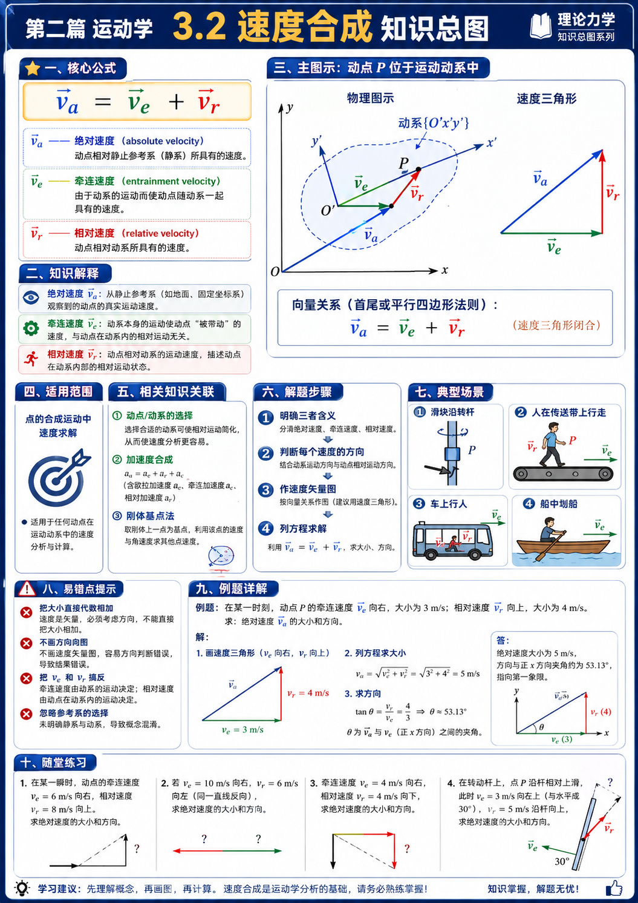
看图提示：先观察图中的公式主线、运动示意、方法关联和易错提醒，再回到左侧内容区完成理解。
本模块重点：加速度合成比速度合成多出科氏项，特别是动系转动时更要注意。
① 详细讲解：把概念讲透
绝对加速度 aₐ 是动点相对于静系的加速度。
相对加速度 aᵣ 是动点相对动系运动产生的加速度。
学习抓手：加速度合成比速度合成多一层判断：动系是否转动、相对速度是否存在。
② 应用场景：看到题目知道怎么用
- 转杆上滑块的加速度。
- 旋转平台上移动物体。
- 导槽机构中滑块加速度。
- 复杂机械系统中相对运动分析。
③ 知识关联：和前后内容连起来
- 与速度合成配套，但不能简单把速度公式直接求导后漏掉科氏项。
- 科氏加速度由动系转动和相对速度共同决定。
- 牵连加速度常用定轴转动公式计算。
- 最终仍需要矢量分解或作图合成。
④ 扩展理解：从公式走到物理意义
加速度合成题通常难在方向：牵连、相对、科氏各项方向不同，必须逐项判断。
若相对速度为零，即使动系转动，也没有科氏加速度。
⑤ 解题技巧：考试时按这个流程来
- 先判断动系是否转动。
- 再判断 vᵣ 是否为零。
- 逐项画出 aₑ、aᵣ、a_c。
- 最后用矢量图或坐标分量合成。
⑥ 易错提醒：这些坑最容易扣分
- 漏掉科氏加速度。
- 把牵连加速度和相对加速度混在一起。
- 没有先判断条件就机械套公式。
⑦ 小练习：学完马上巩固
题目：若动系转动角速度不为零，但某瞬时 vᵣ=0，科氏加速度是多少？
参考答案：因为 vᵣ=0，所以 a_c=0。
模块配图
看图提示：先观察图中的公式主线、运动示意、方法关联和易错提醒，再回到左侧内容区完成理解。
本模块重点：科氏加速度只在动系转动且动点有相对速度时出现。
① 详细讲解：把概念讲透
科氏加速度只在动系有角速度且动点相对动系有速度时出现。
方向由叉乘 2ωₑ×vᵣ 决定，平面问题常用右手定则或旋转 90° 判断。
学习抓手：科氏加速度专门处理“转动动系中的相对运动”，出现条件和方向判断最重要。
② 应用场景：看到题目知道怎么用
- 滑块沿旋转杆滑动。
- 旋转圆盘上的径向运动。
- 地球自转参考系中的运动偏转。
- 高速旋转机械中滑动部件分析。
③ 知识关联：和前后内容连起来
- 是加速度合成中的特殊项。
- 需要角速度/角加速度知识作为基础。
- 方向判断依赖矢量叉乘或右手定则。
- 与非惯性系动力学中的惯性力有进一步联系。
④ 扩展理解：从公式走到物理意义
科氏加速度不是因为有某个额外接触力才出现，而是因为参考系在转动。
在工程中漏掉科氏项会导致加速度和受力分析明显错误。
⑤ 解题技巧：考试时按这个流程来
- 记住两个条件：ωₑ≠0，vᵣ≠0。
- 先判大小，再判方向。
- 平面转动中可把 vᵣ 按 ω 的转向转 90° 得方向。
- 单位仍是 m/s²，不要和角加速度单位混淆。
⑥ 易错提醒：这些坑最容易扣分
- 只要动系转动就认为一定有科氏加速度。
- 方向判断不使用右手定则。
- 把科氏加速度与向心加速度混淆。
⑦ 小练习：学完马上巩固
题目：ωₑ=4rad/s，vᵣ=2m/s 且二者垂直，求 a_c 大小。
参考答案：a_c=2×4×2=16m/s²。
模块配图
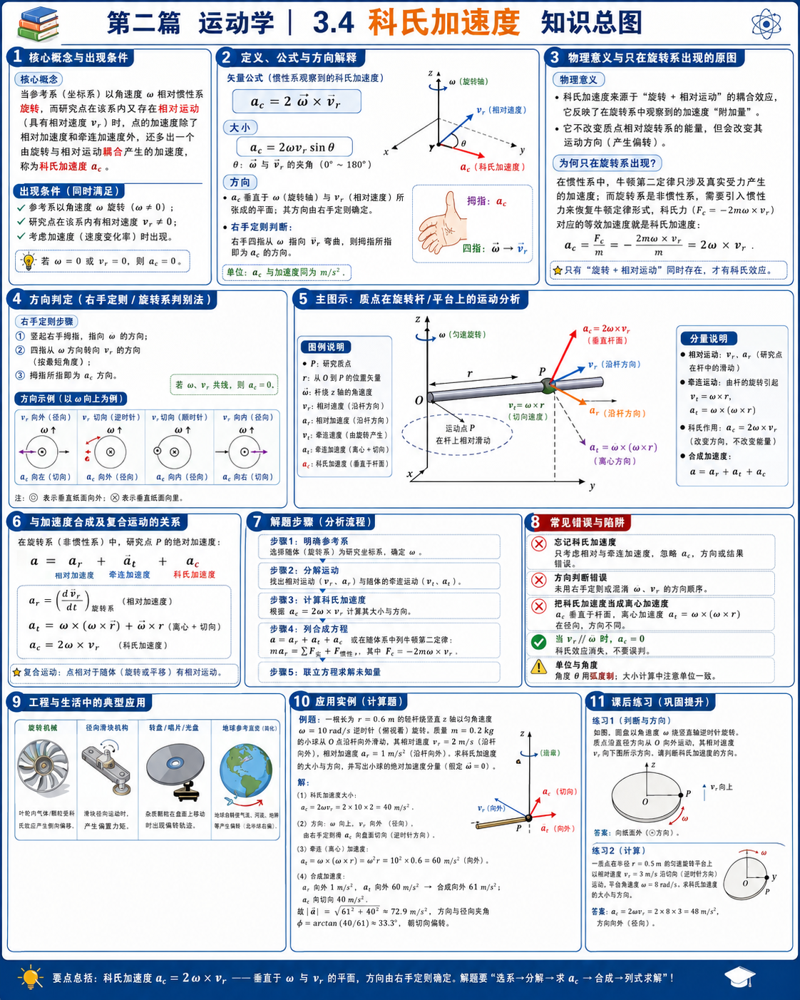
看图提示：先观察图中的公式主线、运动示意、方法关联和易错提醒，再回到左侧内容区完成理解。
四、
四、刚体平面运动 ★
刚体平面运动是运动学的综合重点。它可以看成随基点的平动与绕基点的转动叠加，速度分析常用基点法、速度投影法、瞬心法；加速度分析则以基点加速度合成公式为核心。
展开查看本页知识总图（放大版）
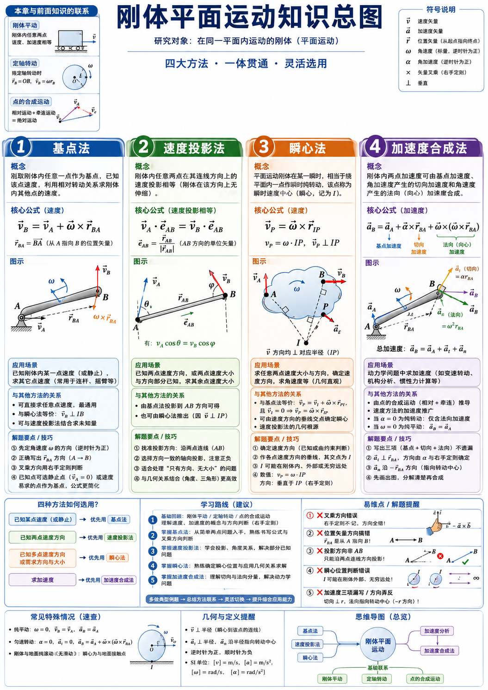
章节总图：先建立本页知识的主干结构，再进入每个子模块学习。
本模块重点：先根据总图建立章节主线，再逐个学习子模块的详细讲解、应用场景、知识关联、扩展理解、解题技巧、易错提醒和小练习。
本模块重点：把刚体平面运动分解为基点平动与绕基点转动。
① 详细讲解：把概念讲透
选刚体上一点 A 作为基点，则刚体上任一点 B 的运动可看作 A 点整体平动加上 B 绕 A 的相对转动。
加速度关系还需考虑切向项 α×r_BA 和法向项 ω×(ω×r_BA)。
学习抓手：基点法把平面运动拆成“基点平动 + 绕基点转动”，是刚体平面运动最通用的方法。
② 应用场景：看到题目知道怎么用
- 连杆机构速度、加速度分析。
- 曲柄滑块机构。
- 车轮平面运动。
- 机械臂杆件某一点速度求解。
③ 知识关联：和前后内容连起来
- 与平动有关：基点运动代表整体平移部分。
- 与定轴转动有关：相对基点部分是转动。
- 与速度投影法、瞬心法可相互验证。
- 与合成运动思想相似，都是分解再合成。
④ 扩展理解：从公式走到物理意义
基点不是固定点，而是你选来简化计算的参考点。
选好基点能让题目从复杂变简单。
⑤ 解题技巧：考试时按这个流程来
- 优先选已知速度或加速度的点。
- 相对速度垂直于连线 AB。
- 相对法向加速度沿 BA 指向基点 A。
- 列方程前先画方向图。
⑥ 易错提醒：这些坑最容易扣分
- 把基点误认为必须静止。
- 相对速度方向没有垂直 AB。
- 加速度题漏掉法向项。
⑦ 小练习：学完马上巩固
题目：AB=0.6m，ω=5rad/s，求 B 相对 A 的速度大小。
参考答案：v_B/A=5×0.6=3m/s。
模块配图
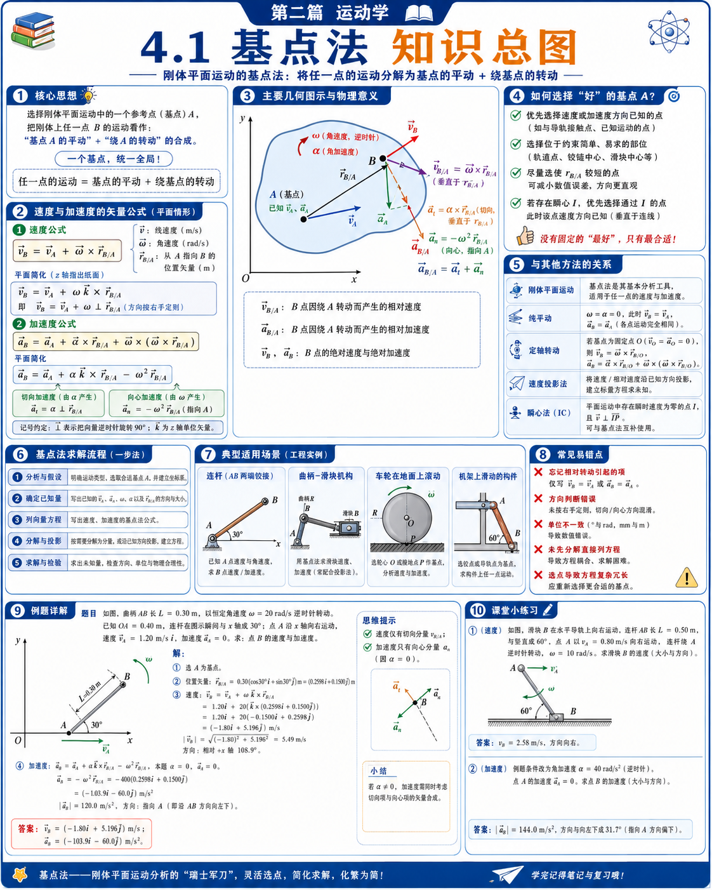
看图提示：先观察图中的公式主线、运动示意、方法关联和易错提醒，再回到左侧内容区完成理解。
本模块重点：刚体上任意两点速度在两点连线方向上的投影相等。
① 详细讲解：把概念讲透
刚体上任意两点距离保持不变，因此两点沿连线方向不能相互靠近或远离。
速度投影法适合已知速度方向、要求速度大小的题。
学习抓手：速度投影法用“刚体不伸长不缩短”快速建立两点速度关系。
② 应用场景：看到题目知道怎么用
- 连杆两端速度关系。
- 滑块-杆机构速度求解。
- 已知一端速度方向求另一端速度大小。
- 快速判断机构速度约束。
③ 知识关联：和前后内容连起来
- 来源于刚体不可变形条件。
- 与基点法等价，是其在连线方向上的投影结果。
- 与瞬心法同属速度分析方法。
- 不能直接替代加速度分析。
④ 扩展理解：从公式走到物理意义
速度投影法在考试中非常省时间，尤其当两点速度方向都已知时。
若方向图画错，投影方程也会错。
⑤ 解题技巧：考试时按这个流程来
- 连接两点 AB。
- 分别把 v_A、v_B 投影到 AB 方向。
- 写出投影相等关系。
- 注意正负号和夹角方向。
⑥ 易错提醒：这些坑最容易扣分
- 认为两点速度大小相等，其实只是连线方向投影相等。
- 投影方向选错。
- 把速度投影法用于加速度题。
⑦ 小练习：学完马上巩固
题目：杆 AB 水平，A 点速度在 AB 方向分量为 2m/s，求 B 点速度在 AB 方向分量。
参考答案：B 点在 AB 方向速度分量也为 2m/s。
模块配图
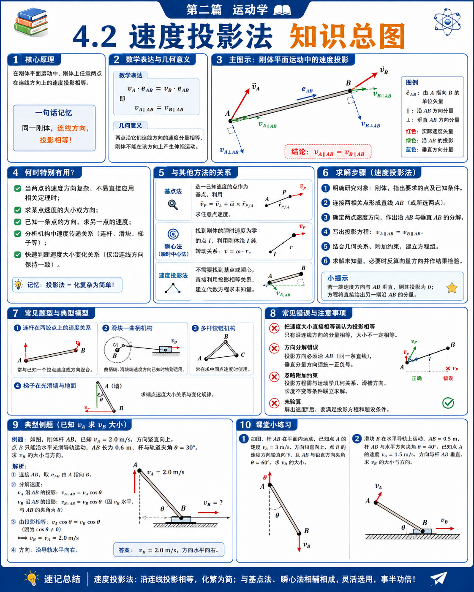
看图提示：先观察图中的公式主线、运动示意、方法关联和易错提醒，再回到左侧内容区完成理解。
本模块重点：平面运动刚体在某一瞬时可看成绕瞬时速度中心转动。
① 详细讲解：把概念讲透
瞬心是刚体在某一瞬时速度为零的点，记作 I。
速度大小满足 v=ω·IP，离瞬心越远，速度越大。
学习抓手：瞬心法把平面运动某一瞬间等效成绕一点转动，用于速度分析特别直观。
② 应用场景：看到题目知道怎么用
- 车轮纯滚动时接触点为瞬心。
- 杆件两点速度方向已知时求速度大小。
- 连杆机构的瞬时速度分析。
- 复杂平面机构的速度快速求解。
③ 知识关联：和前后内容连起来
- 与定轴转动相似，只是瞬时转轴位置可能变化。
- 与速度投影法、基点法结果一致。
- 只能直接用于速度，不能直接用于加速度。
- 纯平动可看作瞬心在无穷远。
④ 扩展理解：从公式走到物理意义
瞬心法的难点不是公式，而是找到 I。通常通过已知速度方向作垂线，垂线交点就是瞬心。
⑤ 解题技巧：考试时按这个流程来
- 已知某点速度方向，就过该点作速度方向的垂线。
- 两条垂线交点为瞬心。
- 用速度大小与距离成正比求未知速度。
- 不要用瞬心法直接求加速度。
⑥ 易错提醒：这些坑最容易扣分
- 把瞬心当成固定铰点。
- 速度垂线画错。
- 用瞬心法求加速度，漏掉切向/法向项。
⑦ 小练习：学完马上巩固
题目：纯滚动轮半径 R=0.3m，角速度 ω=10rad/s，轮心速度是多少？
参考答案：v_O=ωR=3m/s。
模块配图
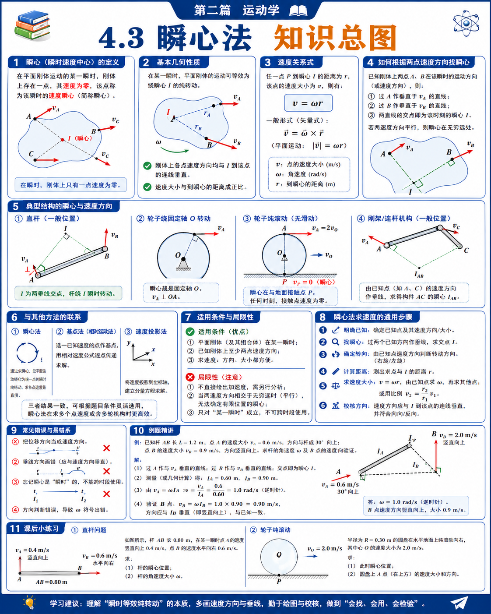
看图提示：先观察图中的公式主线、运动示意、方法关联和易错提醒，再回到左侧内容区完成理解。
本模块重点：平面运动中一点加速度等于基点加速度加相对切向和法向加速度。
① 详细讲解：把概念讲透
以 A 为基点时，B 点加速度由三部分组成：A 点加速度、B 绕 A 转动的切向加速度、B 绕 A 转动的法向加速度。
法向分量由角速度 ω 引起，方向沿 BA 指向基点 A，大小为 ω²·AB。
学习抓手：刚体平面运动加速度合成要分清基点加速度、切向分量、法向分量。
② 应用场景：看到题目知道怎么用
- 连杆机构加速度求解。
- 曲柄滑块机构分析。
- 机器人关节杆件加速度。
- 平面刚体动力学前的运动学准备。
③ 知识关联：和前后内容连起来
- 是基点法在加速度层面的展开。
- 切向/法向分量与自然法完全对应。
- 定轴转动公式 aₜ=rα、aₙ=rω² 是它的局部形式。
- 后续动力学中受力计算需要准确加速度。
④ 扩展理解：从公式走到物理意义
速度题只需要一个相对速度项，而加速度题要同时考虑切向和法向，因此更容易漏项。
方向图比公式更重要，画错方向会导致全题崩盘。
⑤ 解题技巧：考试时按这个流程来
- 先选基点 A，写 a_A。
- 画切向分量：垂直 AB，方向由 α 判断。
- 画法向分量：沿 BA 指向基点。
- 最后用分量法合成 a_B。
⑥ 易错提醒：这些坑最容易扣分
- 漏掉法向加速度。
- 把法向方向画成远离基点。
- 把 α 和 ω 混用。
- 只求大小不判断方向。
⑦ 小练习：学完马上巩固
题目：AB=0.5m，ω=4rad/s，α=6rad/s²，求相对切向和法向加速度大小。
参考答案：aₜ=6×0.5=3m/s²；aₙ=16×0.5=8m/s²。
模块配图
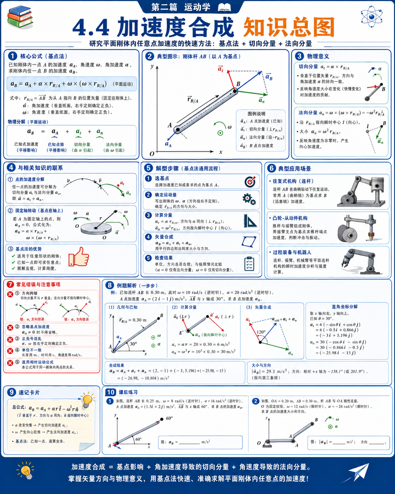
看图提示：先观察图中的公式主线、运动示意、方法关联和易错提醒，再回到左侧内容区完成理解。